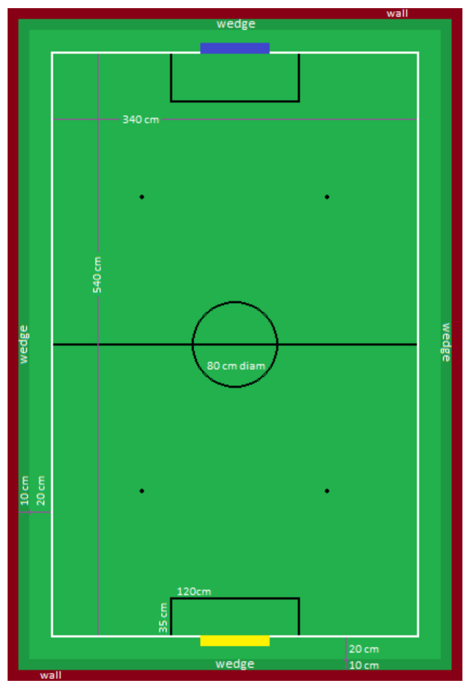

These are the draft SuperTeam Soccer rules for RoboCupJunior 2024. They are released by the RoboCupJunior Soccer League Committee. The English version of these rules has priority over any translations.
Teams are advised to check the RoboCupJunior Soccer site https://junior.robocup.org/ and Soccer forum https://junior.forum.robocup.org/c/robocupjunior-soccer/5 for procedures and requirements for the international competition and with local tournament organizers for local, regional and super-regional competitions. Each team is responsible for verifying the latest version of the rules prior to competition. Teams should ask for clarifications on the Forum where necessary. [1]
Preface
In the RoboCupJunior Soccer challenge, teams of young engineers design, build, and program two fully autonomous mobile robots to compete against another team in matches. The robots must detect a ball and score into a color-coded goal on a special field that resembles a human soccer field.
To be successful, participants must demonstrate skill in programming, robotics, electronics and mechatronics. Teams are also expected to contribute to the advancement of the community as a whole by sharing their discoveries with other participants and by engaging in good sportsmanship, regardless of culture, age or result in the competition. All are expected to compete, learn, have fun, and grow.
These rules are released together with the current regular game rules. Wherever a change is needed because of the difference with regular games, situation have been analyzed and are ruled here. For all other situations that do not change from the regular game rules, normally they have been only mentioned here as being the same regular game rule.
1. GAMEPLAY
1.1. Game procedure and length of a game
RCJ Soccer SuperTeam games consist of two teams of robots playing soccer against each other. Each team has five autonomous robots. The game will consist of two halves. The duration of each half is 10-minutes. There will be a 5-minute break in between the halves.
The game clock will run for the duration of the halves without stopping (except when a referee wants to consult another official). The game clock will be run by a referee or a referee assistant.
SuperTeams are expected to be at the field 5 minutes before their game starts. Being at the inspection table does not count in favor of this time limit. Teams that are late for the start of the game may be penalized one goal per 30 seconds at the referee’s discretion.
The final game score will be trimmed so that there is at most 10-goal difference between the losing and the winning team.
1.2. Pre-match meeting
At the start of the first half of the game, a referee will toss a coin. The team mentioned first in the draw shall call the coin. The winner of the toss can choose either which end to kick towards, or to kick off first. The loser of the toss chooses the other option. After the first half, teams switch sides. The SuperTeam not kicking off in the first half of the game will kick off to begin the second half of the game.
During the pre-match meeting the referee or their assistant may check whether the robots are capable of playing (i.e., whether they are at least able to follow and react to the ball). If none of the robots is capable of playing, the game will not be played and zero goals will be awarded to both SuperTeams.
1.3. Kick-off
Each half of the game begins with a kick-off. All robots must be located on their own side of the field. All robots must be halted. The ball is positioned by a referee in the center of the field.
The team kicking off places their robots on the Big field first and the rest of the robots can be located anywhere on their side of the playing field, as long as they are at a maximum distance of 10 cm from any white line.
The SuperTeam not kicking off will now place their robots on the defensive end of the Big field.
Robots cannot be placed behind the goal line or out of bounds. Robots cannot be repositioned once they have been placed, except if the referee requests to adjust their placement to make sure that the robots are placed properly within the field positions.
On the referee’s command (usually by whistle), all robots will be started immediately by members of the team they belong to. Any robots that are started early will be removed by the referee from the field and deemed damaged.
Before a kick-off, all damaged or out-of-bounds robots are allowed to return to the playing field immediately if they are ready and fully functional.
If no robots are present at a kick-off (because they have moved out-of-bounds Rule 1.9, “Out of bounds” or are damaged Rule 1.10, “Damaged robots”), the penalties are discarded and the match resumes with a Rule 1.3.1, “Neutral kick-off”.
1.3.1. Neutral kick-off
A neutral kick-off is the same as the one described in Rule 1.3, “Kick-off” with a small change: all robots must be at least 30 cm away from the ball (outside of the center circle).
1.4. Human interference
Except for the kick-off, human interference from SuperTeam members (e.g. touching the robots) during the game is not allowed unless explicitly permitted by a referee. Violating SuperTeam(s) / SuperTeam member(s) may be disqualified from the game.
The referee or a referee assistant can help robots get unstuck if the ball is not being disputed near them and if the situation was created from normal interaction between robots (i.e. it was not a design or programming flaw of the robot alone). The referee or a referee assistant will pull back the robots just enough for them to be able to move freely again.
1.6. Scoring
A goal is scored when the ball strikes or touches the back wall of the goal. Goals scored any robot have the same end result: they give one goal to the SuperTeam on the opposite side. After a goal, the game will be restarted with a kick-off from the SuperTeam who was scored against.
After the referee signals that a goal was scored, the referee will invite SuperTeam members to capture their robots or ask a referee to help capture them and get ready for kick-off.
1.9. Out of bounds
If a robot’s entire body moves out beyond the white line of the Big field, it will be called for being out of bounds. When this situation arises, the robot is given a one-minute penalty, and the SuperTeam is asked to remove the robot from the Big field. There is no time stoppage for the game itself. The robot is allowed to return if a kick-off occurs before the penalty has elapsed.
The one-minute penalty starts when the robot is removed from play. Furthermore, any goal scored by the penalized SuperTeam while the penalized robot is on the Big field will not be granted. Out-of-bounds robots can be fixed if the SuperTeam needs to do so, as described in Rule 1.10, “Damaged robots”.
After the penalty time has passed, robot will be placed on the unoccupied neutral spot furthest from the ball, facing its own goal.
A referee can waive the penalty if the robot was accidentally pushed out of bounds by an opposing robot. In such a case, the referee may have to slightly push the robot back onto the Big field.
The ball can leave and bounce back into the Big field. The referee calls
out of reach, and will move the ball to the nearest unoccupied neutral spot
when one of the following condition occurs:
-
the ball remains outside the Big field too long, after a visible and loud count [2],
-
any of the robots are unable to return it into the Big field (without their whole body leaving the Big field), or
-
the referee determines that the ball will not come back into the Big field.
2. SUPERTEAM
2.1. Regulations
A SuperTeam is a team of 3 or more regular teams with their corresponding robots, all from the same sub-league. Regular team is defined on RoboCupJunior Soccer Rules Rule 2.1, “Regulations” and Rule 3.1, “Number of robots / substitution”. Each regular team is required to provide at least one robot for each SuperTeam game.
Each SuperTeam must have a captain. The captain is the person responsible for communication with referees. The SuperTeam can replace its captain during the competition. SuperTeam is allowed to have only the fewest possible members beside the field during game play: they will usually be the captain and one member from each individual team who has a robot as an active SuperTeam player (see Soccer Rules rule Rule 2.1, “Regulations”).
2.2. Violations
RoboCupJunior Soccer Rules rule Rule 2.2, “Violations” applies.
3. ROBOTS
3.1. Number of robots / substitution
The SuperTeam will have all the robots from their respective individual teams available to play. In the playing field, the SuperTeam is allowed to use a maximum of 5 robots simultaneously, and they are its active players. The rest of the robots constitute their reserve players. Since the playing field is big, it is suggested that the SuperTeam establish positions for the robots inside the playing field (goalkeeper, backs, midfielders, forwards, etc.), by adjusting robot’s mechanics and programming.
The substitution of robots during the competition with other SuperTeam is forbidden. Robots will be issued a special code that will distinguish them from other SuperTeams. Each robot that belongs to a superteam will receive an ID identifying the robot as being a member of a team.
Example: Robot A-2: the referee would identify robot with sticker A-2 as robot number 2 belonging to team A. These IDs will be written on the Top Markers of robots (see RoboCupJunior Soccer Rules rule Rule 3.7, “Top Markers”).
Each individual team is required to have at least one of its robots as an active player, with the exception of a sixth team in which case SuperTeam is required to have individual team rotation allowing with that to include all individual teams evenly. SuperTeam members can decide freely how to substitute robots between the current players and the reserve players during gameplay, but the captain is required to ask a referee for robot substitution authorization.
Substitutions are allowed only at every kick-off (see rule Rule 1.3, “Kick-off”).
3.3. Control
RoboCupJunior Soccer Rules rule Rule 3.3, “Control” applies.
3.4. Communication
RoboCupJunior Soccer Rules rule Rule 3.4, “Communication” applies.
To make SuperTeam games more manageable at present and make communication between multiple robots in a SuperTeam easier in the future, the Soccer League Committee will provide each team with a communication module. Each team will be expected to interface with this module using a single 2.54mm GPIO pin at present and the Soccer League Committee plans on extending this to using UART or I²C for more complex applications in future years.
More details will be provided by the Soccer League Committee before the competition.
3.5. Agility
RoboCupJunior Soccer Rules rule Rule 3.5, “Agility” applies.
3.6. Handle
RoboCupJunior Soccer Rules rule Rule 3.6, “Handle” applies.
3.9. Violations
RoboCupJunior Soccer Rules rule Rule 3.9, “Violations” applies.
4. BIGFIELD
4.1. Dimensions of the field
The Big field is 540 cm by 340 cm. The Big field is marked by a white line that is part of the playing field. Around the playing field, beyond the white line, is an outer area of 30 cm width. Total dimensions of the Big field, including the outer area, are 600 cm by 400 cm. The playing area is divided in sides for each SuperTeam by a black line.
The floor near the exterior wall includes a wedge, which is an incline with a 10 cm base and 2 +/- 1 cm rise for allowing the ball to roll back into play when it leaves the playing field.
4.2. Walls
RoboCupJunior Soccer Rules rule Rule 4.2, “Walls” applies.
4.3. Goals
RoboCupJunior Soccer Rules rule Rule 4.3, “Goals” applies.
4.4. Floor
RoboCupJunior Soccer Rules rule Rule 4.4, “Floor” applies.
4.5. Neutral spots
There are five neutral spots defined in the Big field. One is in the center of the Big field. The other four are located over the diagonals that go through the corners of the playing field, half the distance between the center of the field and each corner. The neutral spots can be drawn with a thin black marker. The neutral spots ought to be of circular shape measuring 1 cm in diameter.
4.6. Center circle
A center circle will be drawn on the Big field. It is 80 cm in diameter. It is a thin black marker line. It is there for Referees and SuperTeam members as guidance during kick-off.
4.7. Penalty areas
In front of each goal there is a 35 cm wide and 120 cm long penalty area.
The penalty areas are marked by a white line of 20 mm (±10%) width. The line is part of the area.
4.8. Lighting and Magnetic Conditions
RoboCupJunior Soccer Rules rule Rule 4.8, “Lighting and Magnetic Conditions” applies.
5. BALL
RoboCupJunior Soccer Rules rule Rule 5, “BALL” and its subsections apply.
6. CODE OF CONDUCT
RoboCupJunior Soccer Rules rule Rule 6, “CODE OF CONDUCT” and its subsections apply.
7. CONFLICT RESOLUTION
RoboCupJunior Soccer Rules rule Rule 7, “CONFLICT RESOLUTION” and its subsections apply.
BIG FIELD DIAGRAM
